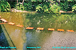
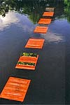
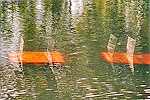
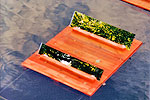
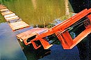

|  |  |  |
|  |  | |
| Statue in the town. Hungarian Glass Art in Europe.
International exhibition of public-place statues in Nürnberg In July 2003 the city of Nürnberg and the "Kulturladen" with its seat in the Zeltnerschloss launched a great undertaking, they invited 30 sculptors from 30 countries on the basis of their previous works. The one-time family castle standing in the outskirts of the town in the middle of a lake of dark green water is a worthy scene of cultural events today. The organisers offered the artists 30 spots in a 3 kilometres circle. The participants in an international field have received full freedom as regards the material usage and the style of their works of art. Niall Walsh of Ireland placed on the street a composition of burnt, roughly-cut hardwood, launched as a performance. Dan Richter-Levin of Israel built a spatial composition from splintery planks on the spot with the help of children. Steinunn Thórarinsdóttir, sculptress travelled there by ship from Sweden with two life-size sitting-thinking figures made of iron and aluminium. I myself, as a born water-fan, made a glass composition of 2.4x1.2x1 m size swimming on the lake. In the body of a glass box a few colour feathers appeared pulled in as a stroke of brush in the white facture of a composition of goose feathers. Based on this swimming body, imitating the structure of a bridge, two glass sheets stretched to the space tightened by wire-cables. Anchored as a boat it floated in the wind throughout a month, reflecting the rich natural and built environment. My other installation was made from the palettes, wire-cables and glass found on the spot. Having sprayed red paint on the palettes I stringed them on the wire-cables fixed to the bottom of the lake, and led the 10 m long hanging bridge in burning red colour starting from the bar of the bridge under the dark green water. Two tilted glass sheets on the surface of each of the palettes provide the people walking on the bridge a steadily changing experience of shots. The town environment dressed in another way for a month set a good example for the wide opportunities of contemporary sculpture, the excessive utilisation of which should not unfortunately be feared in Hungarian public places. András Bojti |
||